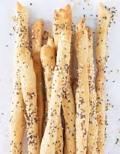

Breadsticks

Please click the link below to get a video guide :-)
BreadSticks by Preppy
__________________________________________________________________________________________________________________
Alternatively:
Here's how to make Fried Chicken.
__________________________________________________________________________________________________________________